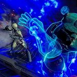

Do you like magic? Do you like shouting “you shall not pass!!”? Do you like cloning yourself and/or other people posthumously? Do you like being a Support main? If so, the this giant Archetype is for you.
This is Nova, wildly unpredictable. Nova's presence on the battlefield is complex and deadly. Handle with care, Tenno.
- The Lotus
The Nova Warframe is a classic Mage, relying on her Abilities to make a huge impact on the battlefield. From teleportation to damage, to a countermeasure against knockdowns, Nova has it all in her Ability kit. She does not need to rely on her weapons too much due to her escape and damage potential. When knocked down, her Passive Ability will also knock down all enemies within a 6 meter radius of her, making Nova very effective against the Corpus Shockwave MOAs.
| Stat | Amount |
|---|---|
| Health | 100, 300 ar Rank 30 |
| Shields | 75, 225 at Rank 30 |
| Armor | 65 |
| Max Power/Energy | 150, 225 at Rank 30 |
| Ability | Description |
|---|---|
| Null Star | Consumes 25 Energy. Nova summons up to six antimatter particles which will orbit around her. They will automatically launch themselves at enemies within up to 12 meters, dealing up to 200 damage each. Particles will orbit for at least one second before firing, and will not fire simultaneously. The particles will not vanish over time, they must be used. This Ability cannot be cast again until all particles have been used. As long as there are still particles orbiting Nova, she is immune to the knockdown effect. |
| Antimatter Drop | Consumes 50 Energy. Nova flings an orb of antimatter. This orb absorbs all damage when shot at, and will explode upon contact with an enemy, ally or terrain, dealing up to 200 damage, plus up to four times the damage the orb had absorbed. The explosion has a radius of up to 15 meters. If the orb explodes from hitting an enemy, the target takes an additional 10 damage. This Ability does not disrupt reloading, charging, or shooting. |
| Worm Hole | Consumes 75 Energy. Nova creates a wormhole in front of her, with the exit being 50 meters away, where the player is aiming at. Up to 4 wormholes can be active at once. These wormholes last up to 16 seconds, or until the wormhole limit is exceeded. If the limit is exceeded, the first wormhole to be made will collapse. Otherwise, each wormhole is on a timer as well. This Ability does not disrupt reloading, charging, or shooting. |
| Molecular Prime | Consumes 100 Energy. Nova spawns waves of antimatter particles in a circle around her. The wave starts at 5 meters away from Nova and moves at 5 meters/second for up to 6 seconds. All enemies in range are coated in antimatter, destabilizing their molecular structure for up to 30 seconds. Affected enemies move and attack up to 30% slower and explode upon death, dealing up to 800 damage to all enemies within up to 10 meters of them. All affected enemies take double damage from all sources. Nova is immune to the knockdown effect while casting this Ability. SHe is, however, vulnerable to damage. This Ability can be cast in midair. |
List of all Mage/Caster Warframes, in no particular order:
List of all Support Warframes, in no particular order: